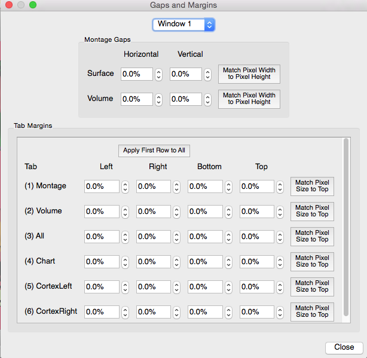

Gaps and Margins
Gaps and Margins contains controls for adjusting
margins in a surface or volume montage and margins around tab content.
All gaps and margins are specified as a percentage of the width or
height.
- Window selects the window to which the
gaps and margins are applied.
- Montage Gaps sets gaps in surface or
volume montages.
- Tab Margins sets margins around the
edges of tabs.
- Match Pixel Size to TopWill adjust the
percentage width so that the actual pixel width of left/right margins is
the same as the pixel height of top/bottom margins.
